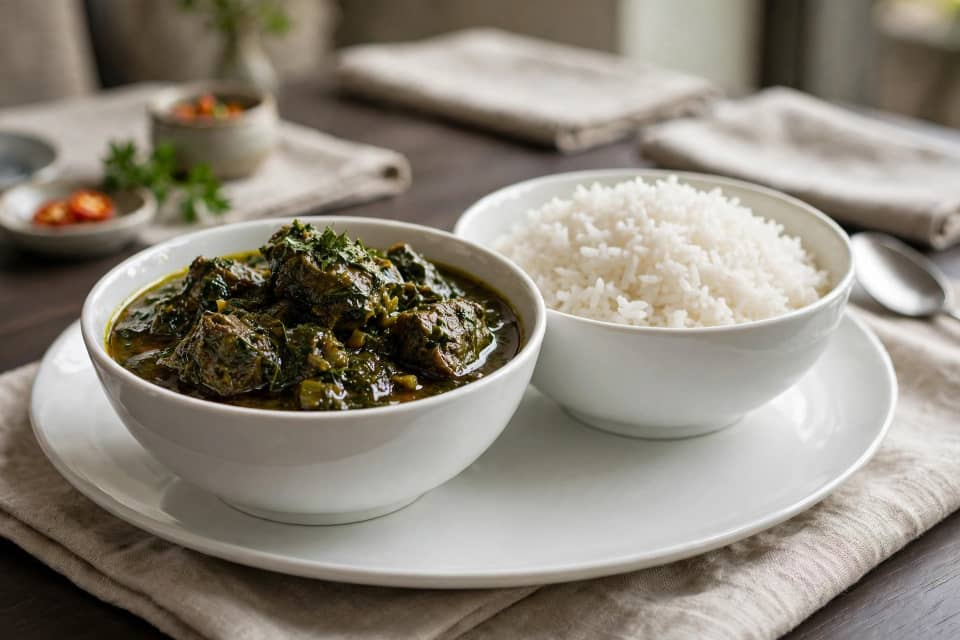

Everything in one place
Dishes, restaurants, menus and locations are all easy to find.
Salone Bites is a website that brings Sierra Leonean dishes and restaurants together in one place. Information about local food is often spread across social media pages or shared by word of mouth. We make menus, prices and locations easy to find.
Our site is designed for students, families, tourists and anyone who wants to enjoy authentic Sierra Leonean food.


Our mission is to promote Sierra Leonean cuisine, support local farmers and chefs, and help small restaurants reach more customers. Good food brings people together, and we want everyone to find it easily.
Dishes, restaurants, menus and locations are all easy to find.
Small restaurants get more visibility and more customers.
Sierra Leonean food gets the recognition it deserves online.